먼저 생각해 보세요.
Ich bewerbe mich um ein Praktikum. sich bewerben과 짝을 이루는 전치사는 무엇인가요?
sich bewerben um + 4격은 '~에 지원하다'예요.
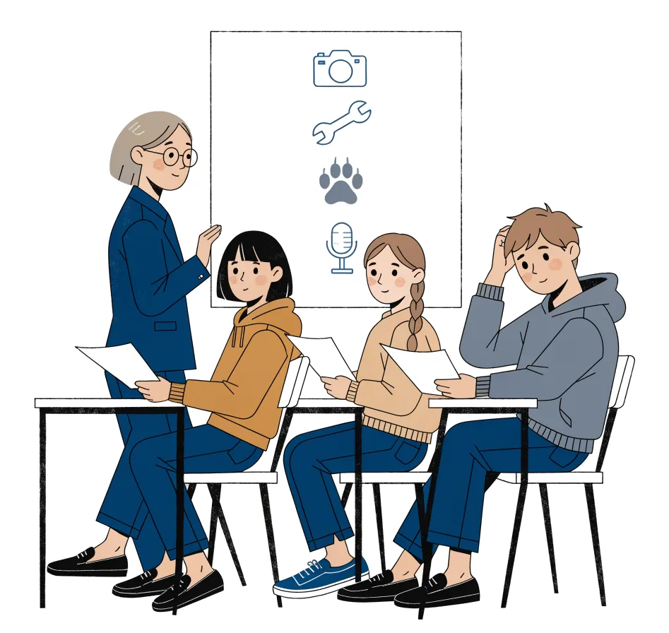
4월이에요. 9b는 6월에 2주 동안 회사나 가게에서 일을 체험해요. 그 전에 가고 싶은 곳을 스스로 찾아 지원해야 해요. Elif, Emma, Yuna는 벌써 갈 곳을 정했는데 Lukas는 아직 모르겠어요.
눌러서 들어 보세요.
먼저 생각해 보세요.
Ich bewerbe mich um ein Praktikum. sich bewerben과 짝을 이루는 전치사는 무엇인가요?
sich bewerben um + 4격은 '~에 지원하다'예요.
문법 lassen + Infinitiv, sich bewerben um, Interesse an (Verben und Nomen mit Präposition), Ich würde mich freuen, …
이 과를 마치면 직업과 내 강점을 이야기하고, 실습 지원서를 쓰고, 면접에서 묻고 답할 수 있어요.
4월의 어느 날, 9b 교실이에요. Frau Schneider가 6월의 실습을 알려요.
들으면서 찾아보세요. Lukas는 어디에 지원하기로 하나요?
5월 초, Lukas가 자전거 가게에서 면접을 봐요.
들으면서 찾아보세요. Lukas는 언제부터 실습을 시작하나요?
두 대화를 듣고 답하세요.
Wie lange dauert das Praktikum?
Wo hat sich Elif beworben?
Emma interessiert sich für Radio.
Sie hat großes Interesse an Tieren.
Was braucht man für eine Bewerbung?
Wo hat Lukas das Reparieren gelernt?
Lukas sagt, dass er manchmal zu viel spricht.
Lukas는 언제부터 실습을 시작하나요?
낱말 34개예요. 낱말이나 예문 앞의 단추를 누르면 소리가 나요. 명사는 der, die, das를 색으로 구분했어요.
der Betrieb, die Betriebe 회사, 사업장
Der Betrieb hat zwanzig Mitarbeiter.그 회사에는 직원이 스무 명 있어요.
der Arbeitsplatz, die Arbeitsplätze 일하는 자리, 일자리
Mein Arbeitsplatz ist in der Werkstatt.내가 일하는 자리는 작업장이에요.
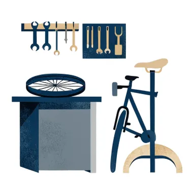
die Werkstatt, die Werkstätten 작업장, 정비소
In der Werkstatt werden Fahrräder repariert.작업장에서 자전거를 고쳐요.
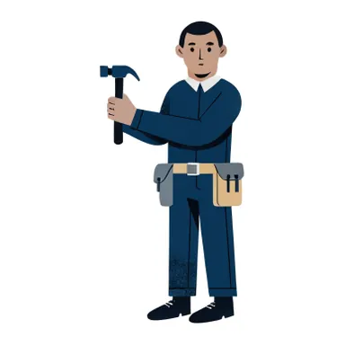
der Handwerker, die Handwerker 기술자
Der Handwerker repariert das Fenster.기술자가 창문을 고쳐요.
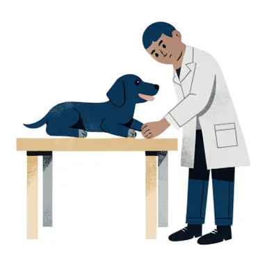
der Tierarzt, die Tierärzte 수의사
Emma möchte Tierärztin werden.Emma는 수의사가 되고 싶어 해요.
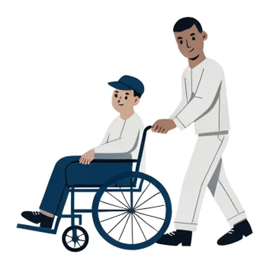
der Krankenpfleger, die Krankenpfleger 간호사(남자)
Mein Onkel ist Krankenpfleger.우리 삼촌은 간호사예요.
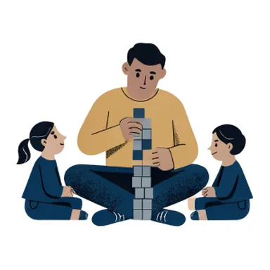
der Erzieher, die Erzieher 보육 교사
Der Erzieher spielt mit den Kindern.보육 교사가 아이들과 놀아요.
der Praktikant, die Praktikanten 실습생
Der Chef zeigt dem Praktikanten die Werkstatt.사장님이 실습생에게 작업장을 보여 줘요.
der Azubi, die Azubis 직업 교육생
Can ist Azubi in einer Autowerkstatt.Can은 자동차 정비소에서 직업 교육을 받아요.
das Gehalt, die Gehälter 급여, 월급
Das Gehalt kommt am Ende des Monats.월급은 월말에 들어와요.
die Arbeitszeit, die Arbeitszeiten 일하는 시간
Die Arbeitszeit ist von neun bis fünf.일하는 시간은 아홉 시부터 다섯 시까지예요.
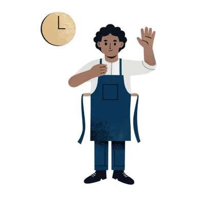
der Feierabend 일과 끝, 퇴근
Um fünf ist Feierabend.다섯 시에 일이 끝나요.
sich bewerben, hat sich beworben (du bewirbst dich, er bewirbt sich) 지원하다
Ich bewerbe mich um ein Praktikum.나는 실습 자리에 지원해요.
die Bewerbung, die Bewerbungen 지원, 지원서
Ich schreibe heute meine Bewerbung.나는 오늘 지원서를 써요.
der Lebenslauf, die Lebensläufe 이력서
Im Lebenslauf stehen meine Schule und meine Hobbys.이력서에는 내 학교와 취미가 적혀 있어요.
das Anschreiben, die Anschreiben 지원 편지
Das Anschreiben ist eine Seite lang.지원 편지는 한 쪽이에요.
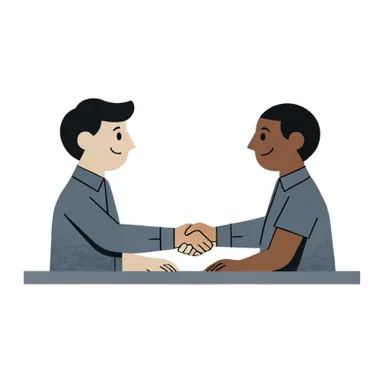
das Vorstellungsgespräch, die Vorstellungsgespräche 면접
Morgen habe ich ein Vorstellungsgespräch.내일 면접이 있어요.
die Stelle, die Stellen 일자리
Ich suche eine Stelle als Koch.나는 요리사 일자리를 찾고 있어요.
die Unterlagen (Pl.) 서류
Bitte schicken Sie uns Ihre Unterlagen.서류를 보내 주세요.
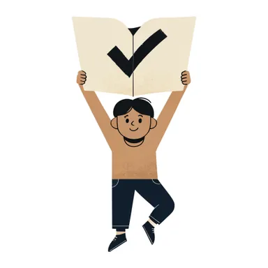
die Zusage, die Zusagen 합격 통보, 승낙
Lukas hat eine Zusage bekommen.Lukas는 합격 통보를 받았어요.
die Absage, die Absagen 거절 통보
Nach drei Absagen kam endlich eine Zusage.거절 통보를 세 번 받은 뒤에 드디어 합격 통보가 왔어요.
der Erfolg, die Erfolge 성공
Viel Erfolg beim Gespräch!면접 잘 보세요!
das Interesse, die Interessen 관심, 흥미
Ich habe großes Interesse an Tieren.나는 동물에 관심이 많아요.
die Stärke, die Stärken 강점
Zuhören ist meine Stärke.남의 말을 잘 듣는 것이 내 강점이에요.
die Schwäche, die Schwächen 약점
Mathe ist meine Schwäche.수학이 내 약점이에요.
die Fähigkeit, die Fähigkeiten 능력
Für diesen Beruf braucht man viele Fähigkeiten.이 직업에는 여러 능력이 필요해요.
geeignet 알맞은, 적합한
Du bist für den Beruf geeignet.너는 그 직업에 알맞아.
geduldig 참을성 있는
Ein Lehrer muss geduldig sein.교사는 참을성이 있어야 해요.
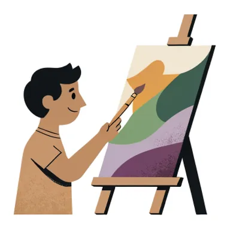
kreativ 창의적인
Elif ist kreativ und schreibt gern.Elif는 창의적이고 글쓰기를 좋아해요.
selbstständig 스스로 하는, 독립적인
Yuna arbeitet sehr selbstständig.Yuna는 일을 아주 스스로 해요.
handwerklich 손으로 하는 일의, 손재주의
Lukas ist handwerklich gut.Lukas는 손재주가 좋아요.
lassen, hat gelassen (du lässt, er lässt) 하게 하다, 맡기다
Der Chef lässt mich selbst reparieren.사장님이 나에게 직접 고치게 해 주세요.
erledigen, hat erledigt 처리하다, 끝내다
Ich erledige zuerst die wichtigen Aufgaben.나는 중요한 일부터 처리해요.
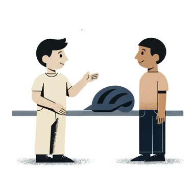
beraten, hat beraten (du berätst, er berät) 상담하다, 조언하다
Die Verkäuferin berät die Kunden.판매원이 손님을 상담해요.
이 과의 낱말로 여덟 문제를 풀어요.
예문을 보고 답해 보세요.
Der Chef lässt die Praktikanten selbst reparieren. 고치는 사람은 누구인가요?
규칙
lassen 뒤에 동사 원형을 쓰면 두 가지 뜻이 돼요. 하나는 누가 하도록 허락한다는 뜻이고, 다른 하나는 내가 하지 않고 남에게 맡긴다는 뜻이에요. lassen은 둘째 자리에, 동사 원형은 맨 끝에 써요.
| 뜻 | 보기 |
|---|---|
| 하게 해 주다 | Der Chef lässt mich selbst reparieren. |
| 남에게 맡기다 | Ich lasse mein Fahrrad reparieren. |
주의 lassen은 du와 er에서 a가 ä로 바뀌어요. ich lasse, du lässt, er lässt, wir lassen.
예문을 보고 답해 보세요.
Ich habe Interesse … Musik. 빈칸에 알맞은 말은 무엇인가요?
규칙
동사와 명사에는 짝을 이루는 전치사가 있어요. 뜻이 같아도 동사와 명사의 전치사가 다를 수 있어요. sich interessieren은 für와, Interesse는 an과 써요. 전치사와 격을 함께 외워요.
| 짝 | 보기 |
|---|---|
| sich bewerben um + 4격 | Ich bewerbe mich um die Stelle. |
| sich bewerben bei + 3격 | Ich bewerbe mich bei der Zeitung. |
| sich interessieren für + 4격 | Ich interessiere mich für Radio. |
| Interesse an + 3격 | Ich habe Interesse an dem Beruf. |
주의 물을 때는 wo(r)에 전치사를 붙여요. Worum bewirbst du dich? Woran hast du Interesse?
예문을 보고 답해 보세요.
Ich würde mich freuen, wenn ich bei Ihnen arbeiten könnte. wenn 문장의 könnte는 어디에 있나요?
규칙
지원서와 면접에서는 바라는 것을 공손하게 말해요. will이나 명령형을 쓰지 않고 würde, könnte, wäre를 써요. wenn 문장에서는 동사를 맨 끝에 써요.
| 바로 말하기 | 공손하게 말하기 |
|---|---|
| Ich will bei Ihnen arbeiten. | Ich würde gern bei Ihnen arbeiten. |
| Laden Sie mich ein! | Über eine Einladung würde ich mich freuen. |
| Antworten Sie mir! | Über eine Antwort würde ich mich freuen. |
주의 지원 편지는 Sehr geehrte Frau … 나 Sehr geehrter Herr …로 시작하고 Mit freundlichen Grüßen으로 마쳐요.
Emma가 동물병원에 전화해요. 듣고 답하세요.
Anruf in der Tierarztpraxis
Frau Dr. Lang Tierarztpraxis Doktor Lang, guten Tag.
Emma Guten Tag, hier ist Emma Wagner. Ich möchte mich um ein Praktikum im Juni bewerben.
Frau Dr. Lang Schön. Hast du schon Erfahrung mit Tieren?
Emma Ja, ich arbeite ehrenamtlich im Tierheim. Ich habe großes Interesse an dem Beruf.
Frau Dr. Lang Das klingt gut. Schick uns bitte deinen Lebenslauf. Dann laden wir dich zum Gespräch ein.
Emma Vielen Dank! Ich schicke die Unterlagen noch heute.
Warum ruft Emma an?
Emma hat noch keine Erfahrung mit Tieren.
Sie arbeitet ehrenamtlich im Tierheim.
Was soll Emma schicken?
Emma는 서류를 언제 보내나요?
듣고 알맞은 것을 고르세요.
내일 인터뷰는 누가 하나요?
Frau Berger lässt mich morgen ein Interview machen.
Lukas의 휴대폰은 누가 고치나요?
Ich lasse mein Handy reparieren. Ich kann das nicht selbst.
Yuna는 어디에 지원했나요?
Ich interessiere mich für Radio. Deshalb habe ich mich beim Radio beworben.
이 사람은 무엇을 알리나요?
Deine Bewerbung hat uns gut gefallen. Wir laden dich zum Vorstellungsgespräch ein.
Lukas가 쓴 지원 편지예요. 읽고 답하세요.
Lukas' Anschreiben
Sehr geehrter Herr Demir,
ich bin Schüler der Klasse 9b und bewerbe mich um ein Praktikum in Ihrem Fahrradladen. Das Praktikum dauert vom 7. bis zum 18. Juni.
Ich interessiere mich sehr für Fahrräder. In der Werkstatt meines Opas repariere ich seit drei Jahren Fahrräder.
Ich bin geduldig und arbeite gern im Team.
Ich würde mich freuen, wenn ich bei Ihnen arbeiten könnte. Über eine Einladung zum Gespräch würde ich mich sehr freuen.
Mit freundlichen Grüßen, Lukas Hoffmann
Worum bewirbt sich Lukas?
Wie lange dauert das Praktikum?
Lukas repariert seit drei Jahren Fahrräder.
Wo repariert Lukas Fahrräder?
Lukas는 편지 끝에서 무엇을 바라나요?
Lukas의 이력서예요. 보고 답하세요.
Lebenslauf
Wann hat Lukas Geburtstag?
Lukas spricht Deutsch und Englisch.
Welche Erfahrung hat Lukas?
lassen이에요. 알맞은 말을 고르세요.
Der Chef mich selbst reparieren.
사장님이 나에게 직접 고치게 해 주세요.
Ich mein Fahrrad reparieren.
나는 자전거 수리를 맡겨요.
du dir die Haare schneiden?
너 머리 자르러 가?
Meine Eltern lassen mich allein .
부모님은 내가 혼자 여행하게 해 주세요.
맨 끝에는 동사 원형이 와요.
mich bitte ausreden!
내 말을 끝까지 들어 줘!
Wir die Bewerbung von der Lehrerin lesen.
우리는 지원서를 선생님께 읽어 달라고 해요.
알맞은 전치사를 고르세요.
Ich bewerbe mich ein Praktikum.
나는 실습 자리에 지원해요.
Emma hat Interesse Tieren.
Emma는 동물에 관심이 있어요.
Yuna interessiert sich Radio.
Yuna는 라디오에 관심이 있어요.
Elif hat sich der Zeitung beworben.
Elif는 신문사에 지원했어요.
bewirbst du dich?
너는 무엇에 지원해?
Ich freue mich das Praktikum.
나는 실습이 기다려져요.
알맞은 낱말을 고르세요.
In meinem stehen meine Schule und meine Hobbys.
내 이력서에는 학교와 취미가 적혀 있어요.
Morgen habe ich ein in der Firma.
내일 회사에서 면접이 있어요.
Ein Lehrer muss sein.
교사는 참을성이 있어야 해요.
Die Firma hat mir eine geschickt. Ich fange im Juni an!
회사에서 합격 통보를 보냈어요. 6월에 시작해요!
Um fünf Uhr ist . Dann gehe ich nach Hause.
다섯 시에 일이 끝나요. 그러면 집에 가요.
Zuhören ist meine . Das kann ich sehr gut.
남의 말을 듣는 것이 내 강점이에요. 그건 아주 잘해요.
낱말을 순서대로 눌러 문장을 만드세요.
사장님이 나에게 직접 고치게 해 주셔.
나는 실습 자리에 지원해.
나는 동물에 관심이 많아.
답장을 주시면 기쁘겠습니다.
낱말과 뜻을 짝지으세요.
듣고 그대로 써 보세요.
Ich bewerbe mich um ein Praktikum. 나는 실습 자리에 지원해요.
Ich habe Interesse an Tieren. 나는 동물에 관심이 있어요.
Viel Erfolg! 잘되기를 바라요!
Ich interessiere mich für … 나는 ~에 관심이 있어요.
Ich habe Interesse an … 나는 ~에 관심이 있어요.
Meine Stärken sind … 내 강점은 ~이에요.
Ich arbeite gern im Team. 나는 여럿이 함께 일하는 걸 좋아해요.
Ich möchte mich um ein Praktikum bewerben. 실습 자리에 지원하고 싶습니다.
Ich bewerbe mich bei Ihnen, weil … ~해서 귀사에 지원합니다.
Ich schicke Ihnen meine Unterlagen. 서류를 보내 드리겠습니다.
Über eine Einladung würde ich mich freuen. 불러 주시면 기쁘겠습니다.
Ich habe schon Erfahrung mit … 저는 ~ 경험이 있어요.
Meine Schwäche ist … 제 약점은 ~이에요.
Ich lasse mir gern etwas erklären. 설명해 주시면 잘 들어요.
Ich lerne schnell. 저는 빨리 배워요.
Wie sind die Arbeitszeiten? 일하는 시간은 어떻게 되나요?
Was sind meine Aufgaben? 제가 맡을 일은 무엇인가요?
Wann kann ich anfangen? 언제 시작할 수 있나요?
대화 B에서 역할을 하나 고르세요. 상대의 말은 음성으로 나오고, 내 차례에는 직접 말해요.
실습하고 싶은 곳을 떠올리며 적으세요. 완성된 문장을 소리 내어 읽어 보세요.
Ich möchte mein Praktikum in einer Tierarztpraxis machen.
Ich interessiere mich für Tiere.
Ich bin geduldig und pünktlich.
Letztes Jahr habe ich im Tierheim geholfen.
Ich würde mich freuen, wenn ich bei Ihnen arbeiten könnte.
Mein Anschreiben
실습 자리에 지원하는 편지를 써요. 일곱 문장쯤 써요.
Sehr geehrte Frau Dr. Lang, ich bin Schülerin der Klasse 9b und bewerbe mich um ein Praktikum in Ihrer Tierarztpraxis. Das Praktikum dauert vom 7. bis zum 18. Juni. Ich habe großes Interesse an Tieren und möchte später Tierärztin werden. Seit März arbeite ich ehrenamtlich im Tierheim. Ich bin geduldig und arbeite gern im Team. Ich würde mich freuen, wenn ich bei Ihnen arbeiten könnte. Über eine Einladung zum Gespräch würde ich mich sehr freuen. Mit freundlichen Grüßen, Emma Wagner
다 쓴 뒤에 확인해 보세요.
Ich kann über Berufe, Stärken und Schwächen sprechen.직업과 강점, 약점을 이야기할 수 있어요.
Ich kann eine Bewerbung für ein Praktikum schreiben.실습 지원서를 쓸 수 있어요.
Ich kann in einem Vorstellungsgespräch antworten und selbst fragen.면접에서 답하고 스스로 물을 수 있어요.